A FIRST VISIT / 第一次来江门
江门的滋味，
从这一餐开始。
一碗外海面、一碟烧鹅、一口陈皮香。先选今天顺路的味道，再慢慢认识五邑的餐桌。
资料更新：2026.10.16 · 适合 1—2 天初访
景点、美食与路线，按你想去的片区慢慢选。
一餐一味，跟着片区吃。
七个区市，14 种风味。先挑今天顺路的一餐；摄影与 AI 菜式示意均在图下注明，门店口味可结合近期评价再选。
暂时没有匹配的美食，试试其他关键词或重置筛选。
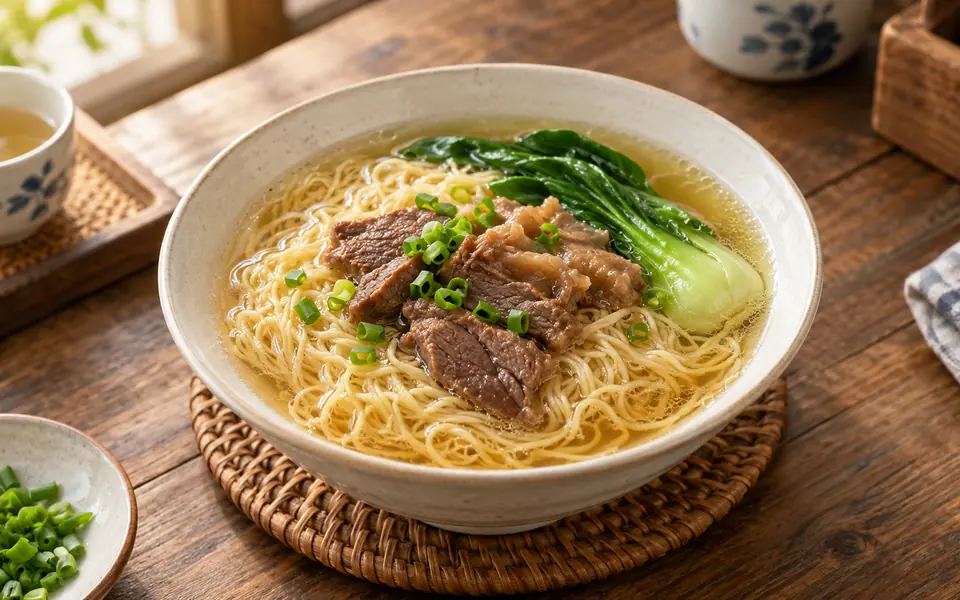
照片暂未加载，可继续阅读介绍。01江海
外海面
面食外海街道
先从一碗外海面认识江门的日常味道。 细面弹韧，吸汤而不易黏成团。
- 适合这样吃
- 喜欢面食、希望安排一顿简便早餐的游客
吃完，再选一站 ＋
出发提示与资料来源
编辑建议 · 早午餐可搜“外海面”，先看面条与汤底，再按喜好选猪脚、牛腩或云吞配料。
行前确认 · 口味与做法因店而异；先核对营业、份量和点餐价格，再安排这一餐。
AI 菜式示意，由 ImageGen 生成，用于帮助理解菜式；不是店铺实拍或本站试吃记录。实际做法、配料与摆盘因店而异。
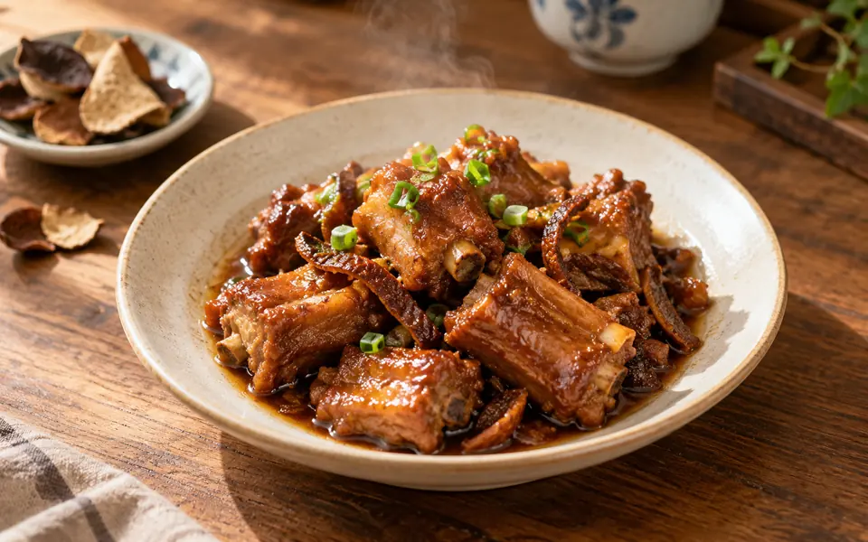
照片暂未加载，可继续阅读介绍。02新会
新会陈皮菜点
陈皮风味会城、陈皮村一带
陈皮不只是伴手礼，也能成为一餐里的主角。 陈香融入菜肴、汤水和甜品，甜咸都能试。
- 适合这样吃
- 想体验陈皮风味、喜欢茶饮与糖水的游客
吃完，再选一站 ＋
出发提示与资料来源
编辑建议 · 第一次可先试陈皮排骨或陈皮红豆沙；人数少时单点一道即可，不必为尝味订整桌陈皮宴。
行前确认 · 口味与做法因店而异；先核对营业、份量和点餐价格，再安排这一餐。
AI 菜式示意，由 ImageGen 生成，用于帮助理解菜式；不是店铺实拍或本站试吃记录。实际做法、配料与摆盘因店而异。
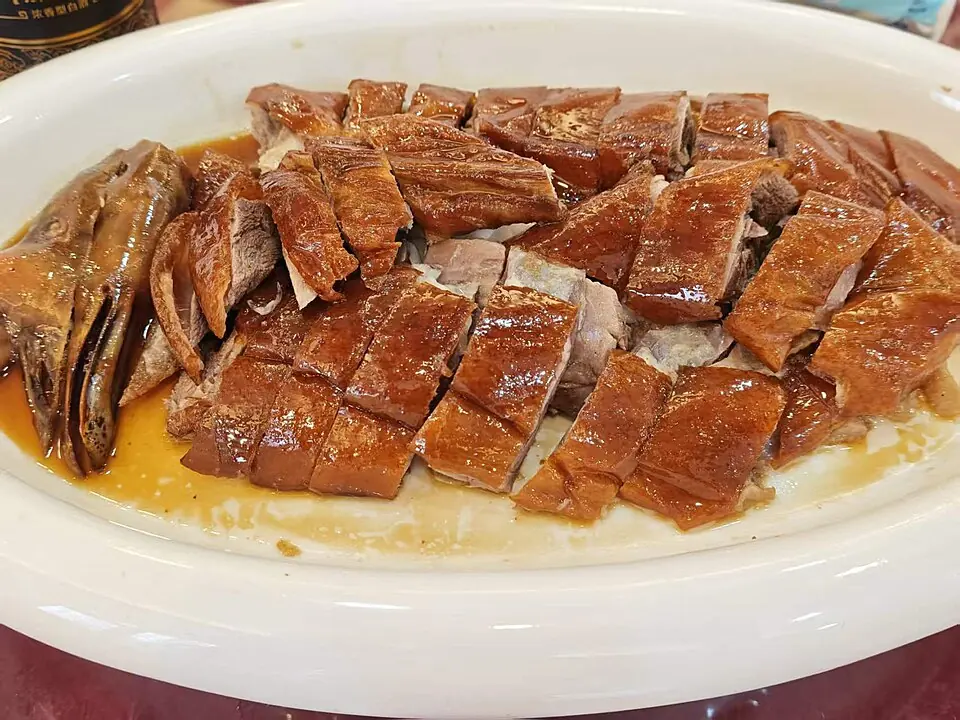
照片暂未加载，可继续阅读介绍。03新会
古井烧鹅
烧味古井镇
到古井寻味，把烧鹅安排成正餐主菜。 鹅皮焦香，肉汁与烧味酱香突出。
- 适合这样吃
- 喜欢烧味、愿意为一餐专门去古井的游客
吃完，再选一站 ＋
出发提示与资料来源
编辑建议 · 地图搜“古井烧鹅街”后核对店家位置；先问当天出炉时间与售卖份量，再决定堂食或打包。
行前确认 · 口味与做法因店而异；先核对营业、份量和点餐价格，再安排这一餐。
摄影/供图：Guangzhou Private Tours by Janvi · 原照片 ↗ · CC BY 4.0 ↗。等比缩小并转换为 WebP；未改变照片内容。网页可能以 object-fit 局部显示。拍摄于2026年。
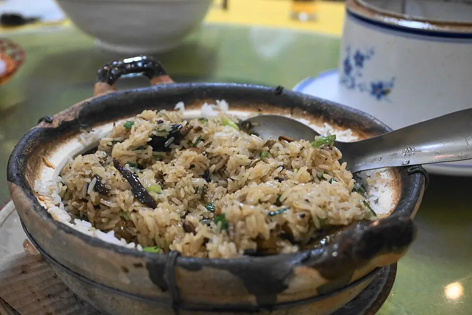
照片暂未加载，可继续阅读介绍。04台山
台山黄鳝饭
米饭水步镇及台山市区
一锅饭，就是台山的一张味觉名片。 鳝肉与米饭相融，主打鲜香与米香。
- 适合这样吃
- 喜欢米饭与鲜味、结伴吃正餐的游客
吃完，再选一站 ＋
出发提示与资料来源
编辑建议 · 走台山线时顺路安排；点餐先确认几人份，留一点胃口尝配菜。
行前确认 · 口味与做法因店而异；先核对营业、份量和点餐价格，再安排这一餐。
摄影/供图：DragonSamYU · 原照片 ↗ · CC BY-SA 4.0 ↗。等比缩小并转换为 WebP；未改变照片内容。网页可能以 object-fit 局部显示。拍摄于2018年。
照片暂未加载，可继续阅读介绍。
恩平濑粉 · AI菜式示意05恩平
恩平濑粉
粉面恩城、牛江等地
用一碗濑粉开启恩平的慢节奏。 米粉爽滑有韧性，汤底和配料各有做法。
- 适合这样吃
- 喜欢汤粉、准备游恩平的游客
吃完，再选一站 ＋
出发提示与资料来源
编辑建议 · 适合放在恩平行程的早餐或午餐；搜“恩平濑粉”时核对店铺是否真在你的行程附近。
行前确认 · 口味与做法因店而异；先核对营业、份量和点餐价格，再安排这一餐。
AI 菜式示意，由 ImageGen 生成，用于帮助理解菜式；不是店铺实拍或本站试吃记录。实际做法、配料与摆盘因店而异。
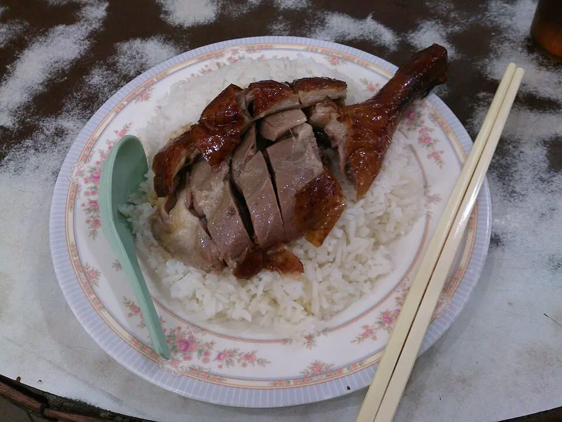
照片暂未加载，可继续阅读介绍。06开平
开平马冈鹅
家常菜马冈镇及开平市区
“马冈”说的是当地鹅种，吃法不止烧鹅。 鹅味浓，烧、卤、焖等做法各有风味。
- 适合这样吃
- 喜欢鹅肉、想比较不同粤菜做法的游客
吃完，再选一站 ＋
出发提示与资料来源
编辑建议 · 游开平时可问店里当天做法；若已吃过古井烧鹅，再选豉油鹅或焖鹅换一种口味。
行前确认 · 口味与做法因店而异；先核对营业、份量和点餐价格，再安排这一餐。
摄影/供图：Ceeseven · 原照片 ↗ · CC BY-SA 3.0 ↗。等比缩小并转换为 WebP；未改变照片内容。网页可能以 object-fit 局部显示。拍摄于2014年。
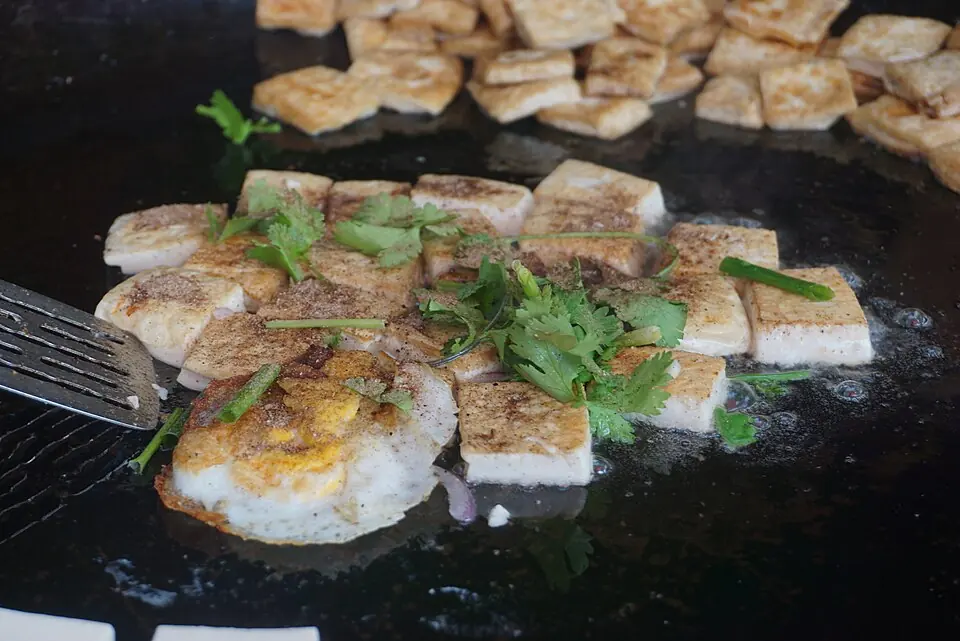
照片暂未加载，可继续阅读介绍。07开平
赤坎豆腐角
街头小吃赤坎镇
逛赤坎时，给热腾腾的小吃留一站。 外层煎香，里面嫩滑。
- 适合这样吃
- 想尝咸口小吃、在赤坎附近散步的游客
吃完，再选一站 ＋
出发提示与资料来源
编辑建议 · 可在赤坎一带找有豆腐角的饭店或小食店，现做小份更适合边走边尝。
行前确认 · 口味与做法因店而异；先核对营业、份量和点餐价格，再安排这一餐。
摄影/供图：DragonSamYU · 原照片 ↗ · CC BY-SA 4.0 ↗。等比缩小并转换为 WebP；未改变照片内容。网页可能以 object-fit 局部显示。拍摄于2018年。
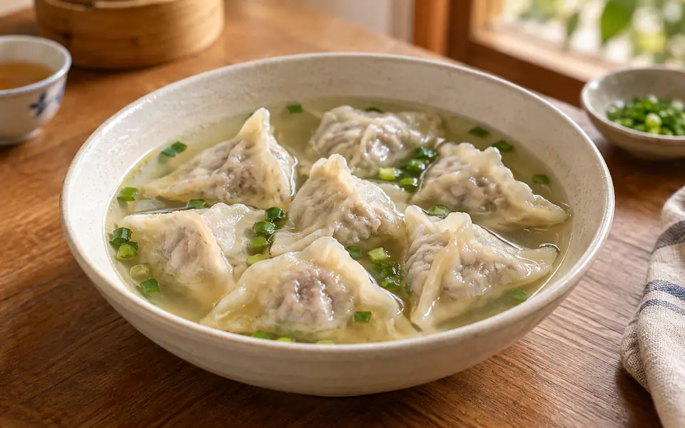
照片暂未加载，可继续阅读介绍。08鹤山
古劳鱼皮角
水乡小吃古劳镇
名字里的“鱼皮”，其实是用鱼肉加工成的外皮。 薄皮包馅，口味偏鲜。
- 适合这样吃
- 喜欢鱼鲜、想在水乡轻松用餐的游客
吃完，再选一站 ＋
出发提示与资料来源
编辑建议 · 走古劳水乡线时顺路尝；点餐可先问汤煮或其他当日做法。
行前确认 · 口味与做法因店而异；先核对营业、份量和点餐价格，再安排这一餐。
AI 菜式示意，由 ImageGen 生成，用于帮助理解菜式；不是店铺实拍或本站试吃记录。实际做法、配料与摆盘因店而异。
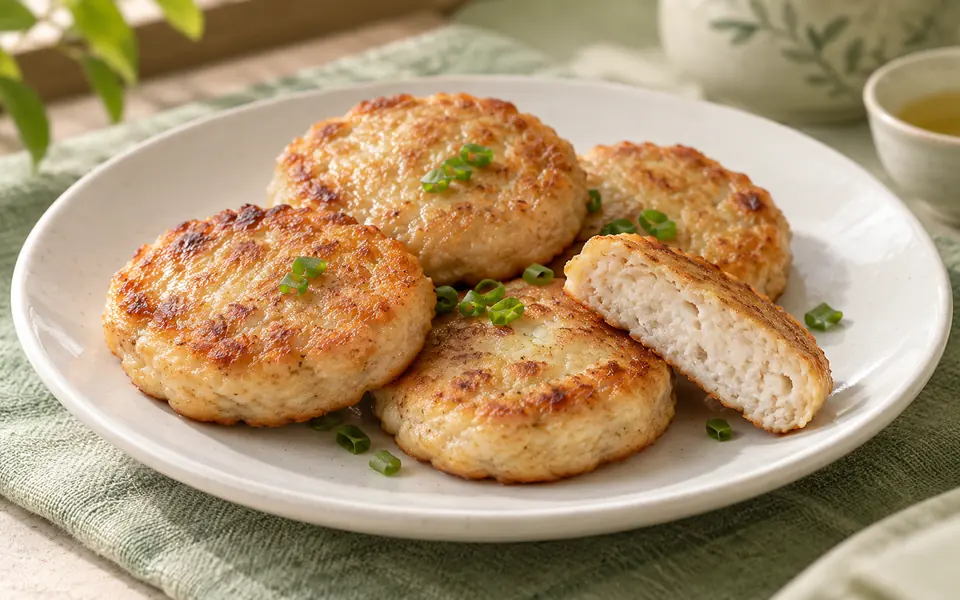
照片暂未加载，可继续阅读介绍。09蓬江
荷塘鱼饼
香煎小吃荷塘镇
一口煎鱼饼，把荷塘的水乡滋味带到餐桌。 鲮鱼蓉煎出焦香外层，内里细嫩而有弹性。
- 适合这样吃
- 喜欢鱼鲜与香煎小吃、准备游蓬江的游客
吃完，再选一站 ＋
出发提示与资料来源
编辑建议 · 可点小份现煎鱼饼配正餐；荷塘与长堤老城之间仍需接驳，不要按步行小吃街来安排。
行前确认 · 口味与做法因店而异；先核对营业、份量和点餐价格，再安排这一餐。
AI 菜式示意，由 ImageGen 生成，用于帮助理解菜式；不是店铺实拍或本站试吃记录。实际做法、配料与摆盘因店而异。
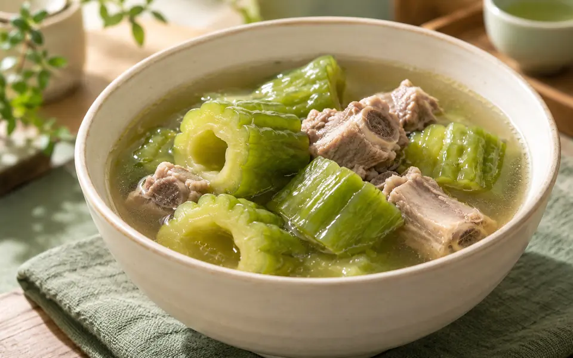
照片暂未加载，可继续阅读介绍。10蓬江
杜阮凉瓜
时令蔬菜杜阮镇及蓬江餐馆
给烧味之外的江门餐桌，添一抹清绿。 肉厚，微苦中带回甘，适合清炒或煲汤。
- 适合这样吃
- 愿意尝试微苦蔬菜、想让正餐搭配更丰富的游客
吃完，再选一站 ＋
出发提示与资料来源
编辑建议 · 先问当日是否使用杜阮凉瓜，按口味选豉汁炒凉瓜或凉瓜排骨汤；供货与做法随店而异。
行前确认 · 口味与做法因店而异；先核对营业、份量和点餐价格，再安排这一餐。
AI 菜式示意，由 ImageGen 生成，用于帮助理解菜式；不是店铺实拍或本站试吃记录。实际做法、配料与摆盘因店而异。
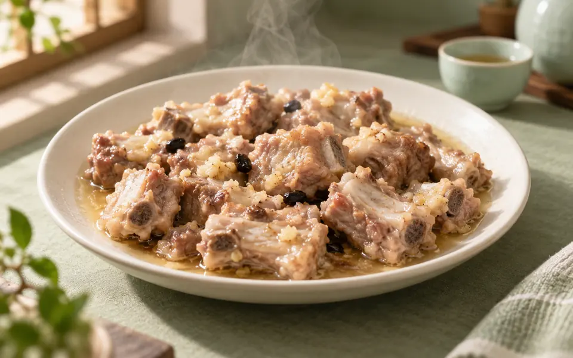
照片暂未加载，可继续阅读介绍。11江海
礼乐排骨
蒸菜礼乐街道
一小碟热气腾腾的蒸排骨，是礼乐的家常认真。 小块排骨蒸出肉香与汁水，口味以鲜香为主。
- 适合这样吃
- 喜欢蒸菜、希望安排一顿家常正餐的游客
吃完，再选一站 ＋
出发提示与资料来源
编辑建议 · 适合放进江海线午餐，与米饭、蔬菜搭配；先问现蒸等待时间，再按人数点份量。
行前确认 · 口味与做法因店而异；先核对营业、份量和点餐价格，再安排这一餐。
AI 菜式示意，由 ImageGen 生成，用于帮助理解菜式；不是店铺实拍或本站试吃记录。实际做法、配料与摆盘因店而异。
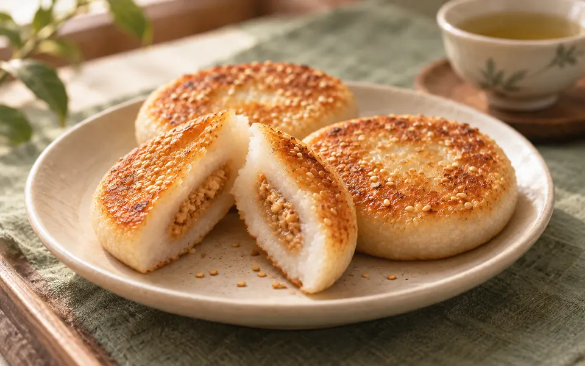
照片暂未加载，可继续阅读介绍。12恩平
恩平烧饼
糯米点心恩城及恩平糕点店
把一枚带着炭火记忆的糯米烧饼，留作恩平行程的小点。 烘烤表皮带香气，糯米饼身柔韧，馅料有不同甜咸选择。
- 适合这样吃
- 喜欢糯米点心、想带一份糕点作伴手礼的游客
吃完，再选一站 ＋
出发提示与资料来源
编辑建议 · 买前询问当天馅料和食用、保存方式；清明相关介绍是民俗背景，不代表店家仅在节日售卖或全年都有全部口味。
行前确认 · 口味与做法因店而异；先核对营业、份量和点餐价格，再安排这一餐。
AI 菜式示意，由 ImageGen 生成，用于帮助理解菜式；不是店铺实拍或本站试吃记录。实际做法、配料与摆盘因店而异。
照片暂未加载，可继续阅读介绍。
台山咸汤圆 · AI菜式示意13台山
台山咸汤圆
咸鲜汤食台城及台山小食店
把熟悉的汤圆换成咸口，就打开了台山的一种团圆滋味。 小糯米丸配萝卜丝、虾干等汤料，鲜味来自汤底。
- 适合这样吃
- 喜欢咸鲜汤食、想尝当地节日家常味的游客
吃完，再选一站 ＋
出发提示与资料来源
编辑建议 · 台山这一做法通常是无馅小丸，点餐时说明要咸汤圆并询问当日配料；别把它当成甜糖水或有馅大汤圆。
行前确认 · 口味与做法因店而异；先核对营业、份量和点餐价格，再安排这一餐。
AI 菜式示意，由 ImageGen 生成，用于帮助理解菜式；不是店铺实拍或本站试吃记录。实际做法、配料与摆盘因店而异。
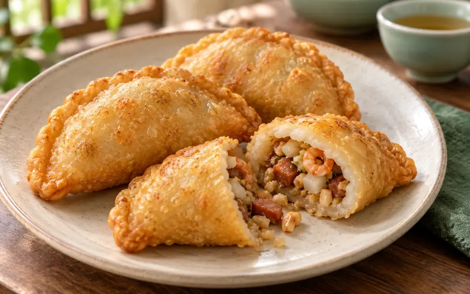
照片暂未加载，可继续阅读介绍。14开平
开平咸鸡笼
油炸米点开平市区及当地小食店
名字叫“鸡笼”，里面装的却是开平的节日风味。 米皮炸出香脆外层，包着细碎的咸香馅料。
- 适合这样吃
- 喜欢咸口米点、游开平时想加一份小吃的游客
吃完，再选一站 ＋
出发提示与资料来源
编辑建议 · 想尝试可先点小份现炸；常见馅料有虾米、叉烧、花生等，具体配方须向店家确认。
行前确认 · 口味与做法因店而异；先核对营业、份量和点餐价格，再安排这一餐。
AI 菜式示意，由 ImageGen 生成，用于帮助理解菜式；不是店铺实拍或本站试吃记录。实际做法、配料与摆盘因店而异。
把探店当灵感，按自己口味选。
抖音 · 公开文案摘读
老城小吃，也能和陈皮味相遇。
“辣辣想去玩”的一日游记录串联了老城小吃、陈皮村和黄鳝饭。适合寻找吃什么的灵感；本站路线会放慢节奏，不照搬一天多站的安排。
作者：辣辣想去玩 · 2025-07-28。已读取公开文字文案，未观看完整视频；商业合作属性未知。
看作者原帖 ↗抖音 · 原帖入口
多店探访，留给你继续比较。
“大冬来了”发布过《24小时不睡觉极限在江门连吃18顿，拿捏》。可从原帖继续找感兴趣的食物，行程仍按自己的食量与体力安排。
作者：大冬来了 · 2026-03-09。已核对标题、作者与日期，未读取完整视频，本站不据此给门店排名；商业合作属性未知。
打开原帖 ↗再找几篇近期评价。
下面是平台检索入口，可把搜索词换成具体菜式或店名。优先比较近期、多位作者的记录；旧价格和排队时间只作参考。
小红书
可搜“江门 外海面”“新会 古井烧鹅”“开平 赤坎豆腐角”。重点看地点、口味描述与近期评论。
搜索近期笔记 ↗检索入口，未作为本站已核验测评；平台可能要求登录。
微信公众号与抖音
微信可搜“江门文旅”“新会文旅”与菜名；抖音可搜“江门美食探店”，再核对具体店名和发布日期。
搜公众号文章 ↗ · 搜抖音探店 ↗搜索结果由平台提供，官方推广与个人探店请分别判断。
出发前，再确认一次。
开放、票务、演出与船班会调整，请以景区当日公告为准。地图链接用于检索地点，具体入口与交通方式请在地图中确认。路线与停留安排是本站编辑建议。
旅行清单保存在当前浏览器，不会跨设备自动同步。旅途中看到的风景，也可以写进自己的江门明信片 →